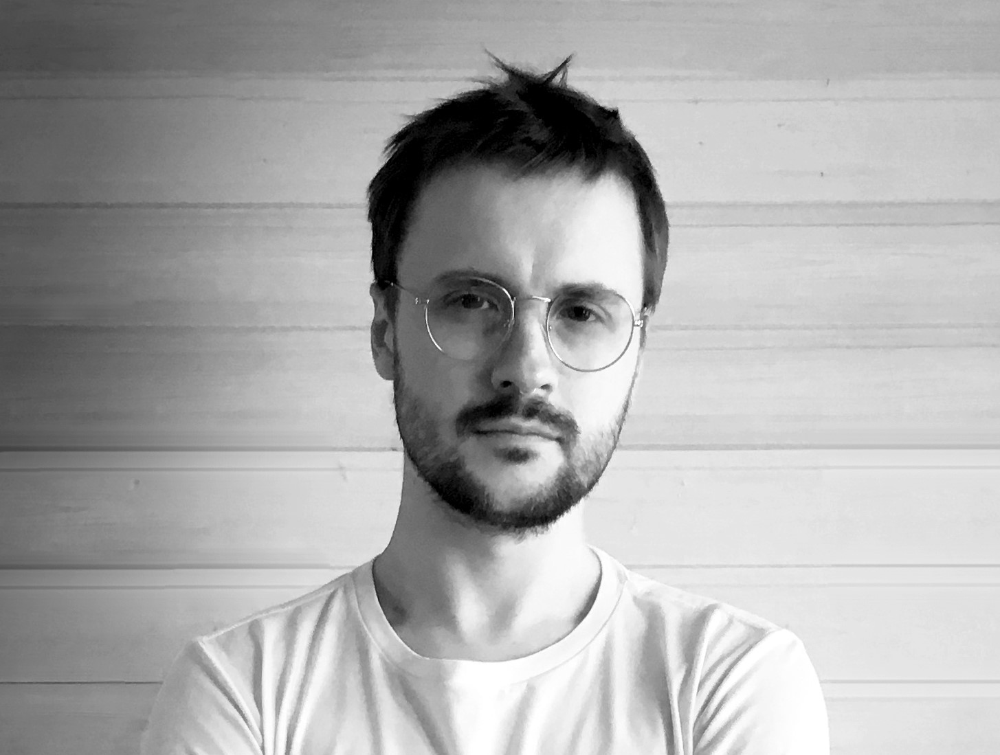

CV
Dmitrii Cherviakov

Developer
Location: Turkey
Citizenship: Russia
Willing to relocate, willing to travel
Contact Information:
Work Schedule:
Full-time, remote
About me:
I am a developer with a focus on backend, web and game development. I have experience working on various projects,
including web application development using .NET and Angular, game development using Unity, and development of class libraries.
I have the ability to develop structured, modular, and efficient code, following OOP principles and best practices.
I am committed to continuous learning and improving my skills. I am quick to learn and adapt to new technologies
and programming languages. I also have a keen interest in exploring new software and technologies. I have a broad range
of interests beyond programming, and I believe that the best solutions and innovations arise at the intersection
of different fields. In my hobbies, I deeply study architecture and history. I also have extensive experience in music, including both creation and rights management.
I am seeking an opportunity to apply my knowledge and experience in exciting projects, working with a team of
dedicated professionals. I would be glad to contribute and help achieve success in software development.
Key Skills:
- Programming Languages: C#
- Frameworks and Platforms: .NET, ASP.NET Core, Entity Framework, Angular, Unity
- Databases: SQLite, MS SQL Server
- Web Development: TypeScript, HTML, CSS
- Game Engines: Unity
- Docker and Containerization
- English Language (B2 level)
Additional skills:
- Bootstrap
- Java
- Swift
- Python
- Interactive Audio (Wwise, FMOD, REAPER)
Work Experience:
OOO "Snegiri-Musica" (January 2017 - Present)
Department Head of Licensing
- Licensing music for advertising and film
- Organizing music production for advertising and film
Individual Entrepreneur Dmitrii Alexandrovich Cherviakov (August 2014 - Present)
Composer/Arranger
- Working on creating musical compositions, arrangements, recording instrument parts
- Participation in music activities of bands/artists
- Creating music and sound design for video brands
OOO "Snegiri-Musica" (June 2015 - December 2016)
Music Licensing Specialist
- Licensing music for advertising and film
Ivanovo State University (January 2009 - March 2014)
Head of Certification, Accreditation, and Licensing Department
- Processing licenses for educational activities and undergoing accreditation procedures for educational programs
Education:
- Bachelor's Degree (2008): Ivanovo State University, Ivanovo, Russia
Professional Development, Courses:
- 2022: Unity Game Development, GeekBrains, Developer
- 2022: C# Developer, GeekBrains, Developer
- 2022: Reverse Engineering and Synthesis, XSSR Academy, Audio Designer
- 2021: Sound Design for Games and Videos, XSSR Academy, Sound Designer
- 2021: Interactive Sound and Audio Effects, XSSR Academy, Audio Designer
- 2021: Music Composition for Games and Videos, XSSR Academy, Composer